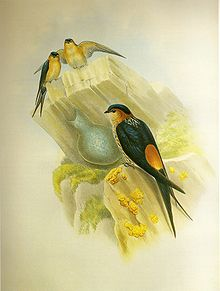
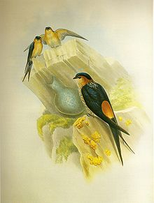

| Red-rumped Swallow | |
|---|---|
|  | |
| Conservation status | |
| Binomial name | |
| Cecropis daurica (Laxmann, 1769) |
|
| Synonyms | |
|
Hirundo daurica' |
| Red-rumped Swallow | |
|---|---|
|  | |
| Conservation status | |
| Binomial name | |
| Cecropis daurica (Laxmann, 1769) |
|
| Synonyms | |
|
Hirundo daurica' |
The Red-rumped Swallow (Cecropis daurica) is a small passerine bird in the swallow family. It breeds in open hilly country of temperate southern Europe and Asia from Portugal and Spain to Japan, India and tropical Africa. The Indian and African birds are resident, but European and other Asian birds are migratory. They winter in Africa or India and are vagrants to Christmas Island and northern Australia.
Red-rumped Swallows are somewhat similar in habits and appearance to the other aerial insectivores, such as the related swallows and the unrelated swifts (order Apodiformes). They have blue upperparts and dusky underparts.
They resemble Barn Swallows, but are darker below and have pale or reddish rumps, face and neck collar. They lack a breast band, but have black undertails. They are fast fliers and they swoop on insects while airborne. They have broad but pointed wings.
Red-rumped Swallows build quarter-sphere nests with a tunnel entrance lined with mud collected in their beaks, and lay 3 to 6 eggs. They normally nest under cliff overhangs in their mountain homes, but will readily adapt to buildings such as mosques and bridges.
They do not normally form large breeding colonies, but are gregarious outside the breeding season. Many hundreds can be seen at a time on the plains of India.

{kind=link}
_collecting_mud_for_nest_W_IMG_7964.jpg){kind=link}